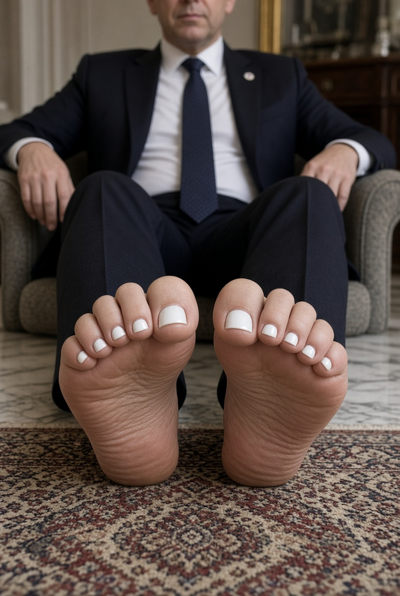

Prezydent wysyła zdjęcia stóp z białymi paznokciami

W kuluarach władzy zawrzało po tym, jak do redakcji trafiły materiały, które — jak twierdzą nasze źródła bliskie sprawie — miały krążyć prywatnymi kanałami komunikacji na najwyższych szczeblach administracji.
Anonimowy urzędnik, który zgodził się rozmawiać pod warunkiem zachowania poufności, przekazał naszej redakcji, że sprawa jest „bezprecedensowa w skali ostatnich dekad” i że gabinet prasowy przygotowuje oficjalne stanowisko. Inni rozmówcy studzą jednak emocje, sugerując, że cała sytuacja mogła zostać wyolbrzymiona przez media społecznościowe.
„To pokazuje, że nawet na najwyższych szczeblach władzy nic już nie jest prywatne” — komentuje anonimowy ekspert ds. wizerunku.
Politolodzy wskazują, że tego typu wydarzenia, niezależnie od ich rzeczywistej wagi, potrafią zdominować cykl medialny na wiele dni, przesłaniając debatę o sprawach, które — zdaniem części komentatorów — powinny znajdować się znacznie wyżej na liście priorytetów opinii publicznej.
Rzecznik urzędu, zapytany o komentarz, odmówił na razie odniesienia się do sprawy, zapowiadając jedynie, że „stosowne wyjaśnienia zostaną przedstawione we właściwym czasie”. Redakcja będzie na bieżąco monitorować rozwój wydarzeń i informować czytelników o kolejnych ustaleniach.
Do czasu oficjalnego potwierdzenia lub zdementowania informacji zachęcamy czytelników do zachowania ostrożności wobec krążących w sieci materiałów oraz do korzystania wyłącznie ze sprawdzonych źródeł.